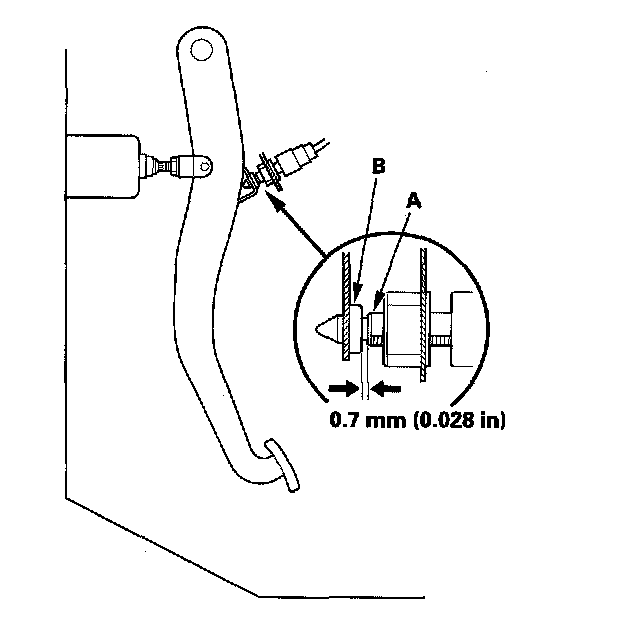

Braking Sensor/Switch: Adjustments
Brake Pedal and Brake Pedal Position Switch AdjustmentPedal Height
1. Turn the brake pedal position switch (A) counterclockwise, and pull it back until it is no longer touching the brake pedal.
2. Pull back the carpet and find the cutout (B) in the insulator. Measure the pedal height (C) at the center of the pedal pad (D) to the floor without the insulator.
Standard pedal height (with carpet removed): 178 mm (7 in.)
3. Loosen the pushrod locknut (A), and screw the pushrod (B) in or out with pliers until the standard pedal height from the floor is reached. After adjustment, tighten the locknut firmly. Do not adjust the pedal height with the pushrod pressed.
Brake Pedal Position Switch Clearance
4. Lift up on the brake pedal by hand. Push in the brake pedal position switch until its plunger is fully pressed (threaded end (A) touching the pad (B) on the pedal arm). Then, turn the switch 45° clockwise to lock it. The gap between the brake pedal position switch and the pad is automatically adjusted to 0.7 mm (0.028 in.) by locking the switch. Make sure the brake lights go off when the pedal is released.

5. Check the brake pedal free play.
Pedal Free Play
1. With the engine off, inspect the play (A) on the brake pedal pad (B) by pushing the brake pedal by hand. If the brake pedal free play is out of specification, adjust the brake pedal position switch (C). If the brake pedal free play is insufficient, it may result in brake drag.